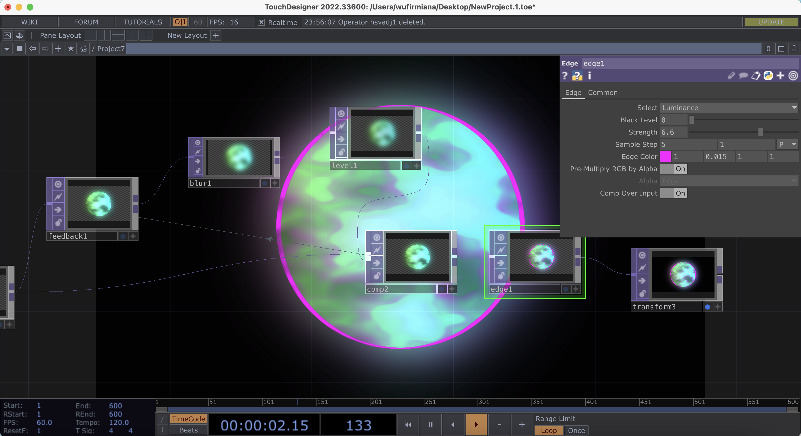

Project Brief
The program didn't point to ask me to do anything specific. The professor gave students the freedom to explore the features in TouchDesigner and generate at least 20 different 2D or 3D images. This was my first in-depth study of TouchDesigner and I referenced a blogger on YouTube. Her instructional videos are of high quality and I am continuing to learn.
Explore the noise function
Noise is the most common and versatile function in TouchDesigner. In these four different animations, I explored the influence of noise on patterns and models. In the second form, I added a sliding button to control the distribution of noise.
Feedback Operator
Feedback allows blending the image of the current frame with the previous frame to create a time-accumulation effect.I've implemented these features of retaining tracks, transparency overlays and image repeat playback through feedback.
Process
Through my previous explorations, I was able to turn Noise into colors, but I felt they were too bright and looked dizzying. So I added an HSV Adjustment component. With this component, I can change the hue, saturation, and brightness.
Challenge
When I was doing the fifth effect, I found that changing the value of Invert reversed the color values of the image. I liked both effects so much that I wanted to keep them all, but I didn't know how to make it automatically convert. Maxim instructed me to use LFOs to generate periodic signals as a way to control dynamic changes.
Self Exploration
I didn't refer to tutorials as I explored Feedback. I tried to link different components to a base dynamic.
I found the Mirror function in TOP. So I play around.
Mix and Process
I started experimenting with linking Noise and Feedback and creating more animations in conjunction with other components. In addition to the 2D patterns, I also used some of the SOP models that come with the system this time to create a 3D effect.
Loop Animations
I started exploring 3D models. The first model I made by linking the music so that the model dynamically follows the drums. The second was to change the 3D model through noise. The third was a dynamic circle that relied on a tube model.
Layer is important!
During the process, I sometimes have situations where the effects are not successfully applied. I never knew what was causing this until I inadvertently clicked on the Input layer.
I went to the community and searched for the reasons. It's because TouchDesigner input processing follows a specific order, with the first connected usually serving as the background layer; most mixing patterns are mathematically asymmetric, resulting in different results for A on B versus B on A.
Camera Position
Just like any other 3D software, TouchDesigner can control camera movement. I tried to show different angles of the same model by changing the camera position and light source angle.